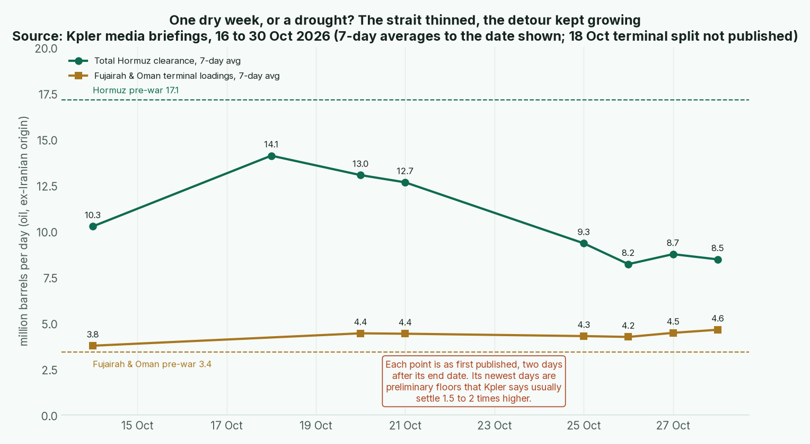

Issue #4 · Sunday 1 Nov 2026 · Warren for Tyler · Back to the master Board Position · Previous issue: 2026-10-25
Tyler, no score moved this week. Not for lack of noise.
My grandfather kept a rain gauge on a fence post and wrote the reading in a little book every evening. One August a neighbour sold his cattle cheap after a dry week. Grandpa read back through his book and kept his herd. He didn't know the weather. He knew the difference between one reading and a record.
Last Sunday I cut Iran's chokepoint score from 7 to 6 because more Gulf oil was getting out despite record attacks. This week the gauge reads dry. Kpler's seven-day average for total clearance through Hormuz fell to 8.5 mb/d in the week to 28 October, about 49% of the pre-war 17.1, from 12.7 the week before. Tanker crossings averaged 11 a day, against 50 before the war (Kpler 30 Oct).
Before you sell the herd, read the rest of the book.
First, the gauge itself. Kpler says its newest days are preliminary floors that usually settle 1.5 to 2 times higher, and the seven-day average covers those same days. Of 38 tanker crossings logged from 25 to 28 October, 32 were dark or of unknown route, exactly the kind that take longest to confirm (Kpler 30 Oct).
Second, the detours kept filling. Loadings at Fujairah and Oman, outside the strait, averaged 4.6 mb/d, about 36% above pre-war. Iraq's oil minister says October exports topped 3.4 mb/d, near pre-war, using Hormuz, the pipeline to Turkey's Ceyhan and trucks through Syria (OilPrice/INA; Rudaw). Kpler, separately, says Iraqi exports are back to pre-war (Kpler 30 Oct), and realised Gulf loadings reached about 10 mb/d in October, against 9.6 in September (Kpler 27 Oct).
Third, a second plank is going on the bridge. ADNOC has told Asian refiners its Upper Zakum crude will reach Fujairah through a sped-up pipeline in early 2027, which Kpler says doubles its capacity to bypass Hormuz (Kpler 30 Oct; Bloomberg). Announced, not operating, so it doesn't score yet, but it shows which way the customers are building.

Chart: Kpler media briefings of 16 to 30 October 2026, seven-day averages to the date shown, against March 2025 to February 2026 baselines. Each point is as first published, two days after its end date. The 20 October briefing gave no Fujairah figure.
How it scores. Iran's chokepoint holds at 6, and its overall at 3.11, dispute noted. The strait got harder to cross, the roads around it got wider, and the strait figure is the one most likely to be revised. When credible readings pull both ways, I hold and note the dispute. If the settled numbers still sit near half of pre-war once confirmations land, I'll put Iran's point back.
Bear case. I could be the man who keeps his cattle while the creek dries for good. Iran has offered to shorten its reopening plan to four or five days if Washington lifts its blockade, and has threatened legal action against Sinokor, which carries nearly 40% of Hormuz crude (Kpler 30 Oct). Kpler sees Tehran's urge to escalate sharpening before Tuesday's midterms. Confidence: Medium.
One reading is weather. A book full of readings is climate. Score the climate.
1. Dedollarization. No new IMF reserve data until late December, so the dollar's 56.70% stands. The Bank of Japan held at 1.25% on 30 October and said, for the first time since it set the target in 2013, that underlying inflation is consistent with 2% (CNBC; Reuters). Japan's money score holds at 5. Confidence: High.
2. Gold and central banks. The World Gold Council's third-quarter report is due in early November (WGC). A 63-tonne global September figure is making the rounds, but I can't trace it to a WGC release, so it stays out. No move. Confidence: Medium.
3. Blocs. A correction. Last week I wrote that Brussels was working on a 22nd sanctions package. The Council had already adopted the 22nd on 12 October: 1,569 listings, the largest ever, aimed at Russia's arms suppliers, with no new trade or energy curbs (Consilium). EU scores unchanged. Confidence: High.
4. China, Russia, India and the Gulf. The diesel deal is now operating. The first cargo meant for the US loaded at Primorsk on 22 October and is expected about 7 November, though its manager says the port isn't fixed (Reuters). Moscow confirms talks on lifting sanctions on its sovereign fund, RDIF (Energy Intelligence). Russia's alliances hold at 4: operating, but one election and a 60-day review from reversal. Confidence: Medium.
5. Military. The Houthis claimed a ballistic-missile hit on Ras Tanura, Saudi Arabia's biggest refinery, on 27 October. Riyadh didn't confirm it (Reuters). Satellite pictures the next day showed nine supertankers loading at Ras Tanura and Juaymah, yet Saudi crude exports still fell to 6.15 mb/d in October from 7.16 in September (Kpler 30 Oct). Gulf hard assets hold at 7; the Houthis stay ▲ Rising. Confidence: Medium.
6. Tech and resources. The rare-earth clock is nine days out. Announcement No. 70 still suspends China's October 2025 controls only to 10 November, and as of 29 October Beijing had published nothing amending it, though the wider truce runs to 10 January (MOFCOM; Strategic Raw Material). China's chokepoint holds at 9. Confidence: Medium.
Tuesday is election day in America, and a fair bit of this board leans on it. Keep a little cash dry.
Warren
Sources and the full scores tables are on the master board. Gaps: Kpler's latest days are preliminary; Reuters read via syndication; Iraq's export figure is the oil minister's own, matched by Kpler; the Ras Tanura hit is a Houthi claim; Intangibles not rescored until the quarter turns.